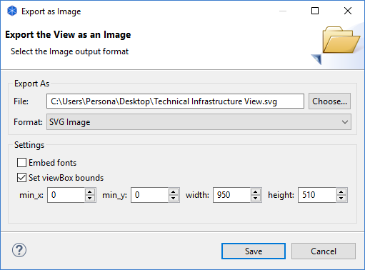

It is possible to export the Archi model or its Views to different formats in order to re-use the model or images in different applications. Some import formats are also supported.
You can export a model's data to CSV format (Comma Separated Values). The data is exported in three different files - "elements.csv", "relations.csv" and "properties.csv". All data elements are identified by unique identifiers so that a property will reference an element or relation in the other files.
This option is available from the "Export Model To CSV..." menu item from the main "File->Export" menu. Once a model is selected in the Model Tree or in a View this menu item is enabled.

Exporting the model to CSV
The CSV field format for elements is - "ID", "Type", "Name", "Documentation"
The CSV field format for relations is - "ID","Type", "Name", "Documentation", "Source", "Target"
The CSV field format for elements is - "ID", "Key", "Value"
Output Folder
Select the folder for the output files.
Delimiter
Select the CSV field delimiter character - comma, semicolon, or tab.
File prefix
Provide an optional prefix to add to the file names. For example, "MyModel-" will change the file names to "MyModel-elements.csv", "MyModel-relations.csv", and "MyModel-properties.csv".
File encoding
Select the file encoding to use - ANSI or UTF-8. Some programs prefer one or the other file encoding.
Strip newline characters
If selected will remove all newline characters from multi-line text such as documentation.
Use Excel leading zeros/spaces workaround
If selected will surround text starting with a zero or space with a quote marks so that the data imports correctly into Excel.
Conversely you can import CSV data into an existing model. The CSV files need to be in the same format as described above. Element and relationship IDs are optional, but you need to provide an ID for an element if it is referenced by a relationship or property, and to provide an ID for a relationship if it is referenced by a property. If providing an ID then it needs to be unique to the file using alpha-numeric characters, for example - "id1", "8fe456d", "actor3". If an ID is not provided, a blank field "" should be present. In this case, an ID will be generated on import.
At the very least, you need to provide a CSV file named "xxx-elements.csv" where the "xxx-" part of the file name is optional. If you also provide a relations file it needs to be in the format described above and named "xxx-relations.csv". If you also provide a properties file it needs to be in the format described above and named "xxx-properties.csv". Again, the "xxx-" part of the file name is optional. All three file names need to match - for example: "myname-elements.csv", "myname-relations.csv" and "myname-properties.csv".
The best way to understand the required format is to export an existing model to CSV format, and open the resulting files in a text editor, or spreadsheet application
When importing the CSV file(s) into Archi make sure that you select the "xxx-elements.csv file in the Import dialog box. If there is a corresponding "xxx-relations.csv" file and/or a corresponding "xxx-properties.csv" file then these file(s) will be automatically imported at the same time.
It is also possible to merge/update the imported CSV data into an existing model. If a model element already exists as denoted by its ID, and the CSV row entry contains different data to that in the model it is updated. For example, a Business Actor with id "9240f5bf", named "BA1", and no documentation can be updated with a row entry as follows:
"ID","Type","Name","Documentation"
"9240f5bf","BusinessActor","New Name","Additional Documentation"
Note - it is currently not possible to import and export View diagram information in CSV format.
A View (diagram) can be exported as an image file to disk. This is available from the "Export View As Image..." menu command from the main "File->Export" menu or by right-clicking on a View and selecting the menu item from the contextual menu. This menu command is only available if a View is open and selected.
Available formats are BMP, JPG, PNG, PDF and SVG. The first three formats can be exported at scaled ranging from 25% to 500%. SVG format has more options including embedding font information and setting the viewBox bounds for different scales.
Exporting a View as an image
Note - this is not implemented on the 64-bit Linux version of Archi due to a bug in Eclipse.
A View (diagram) can be exported (or copied) as an image to the system clipboard. This is available from the "Export View As Image To Clipboard" menu command from the main "File->Export" menu or by right-clicking on a View and selecting the menu item from the contextual menu. This menu command is only available if a View is open and selected. A useful shortcut key combination is Ctrl-Shift-C (Command key on Mac). Once the View is exported to the system clipboard it can be pasted into other applications such as word processing and drawing tools.